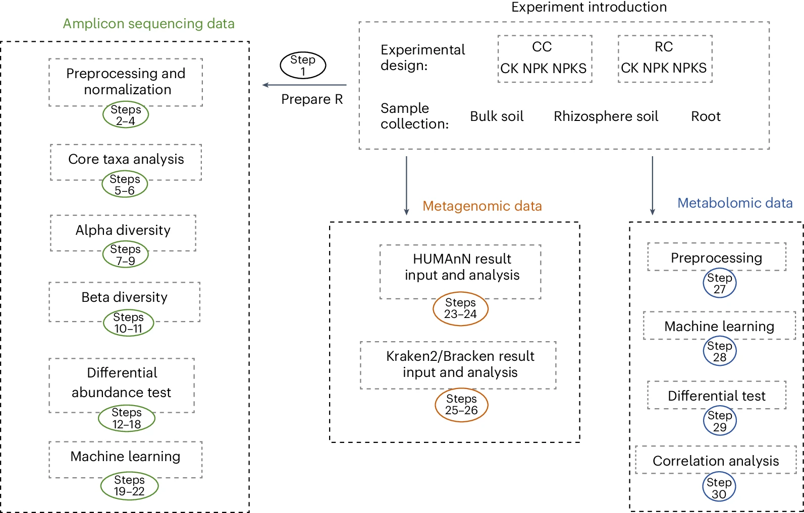
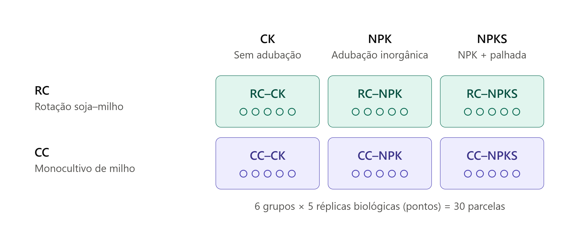
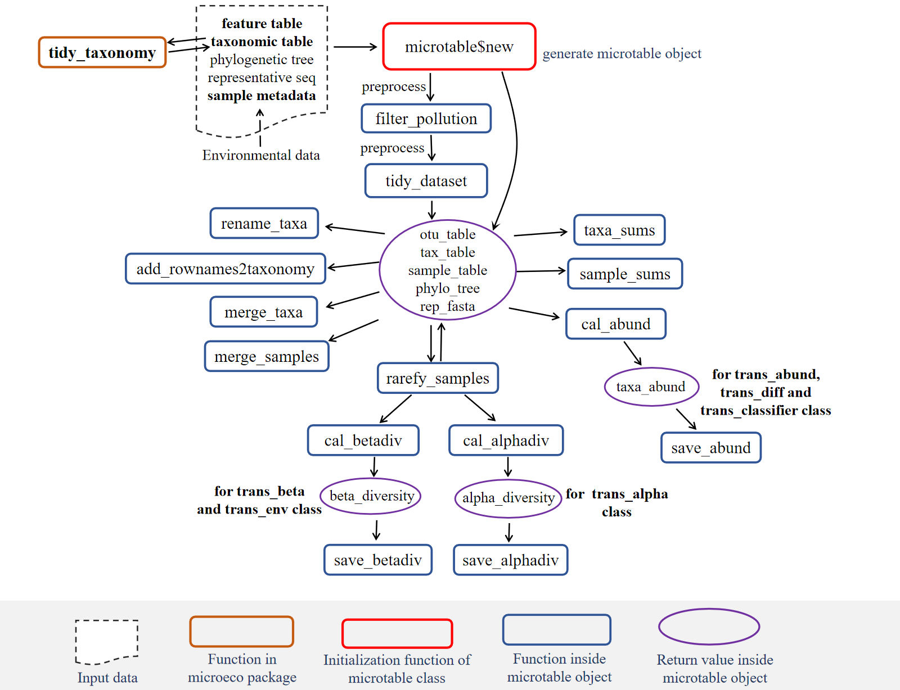
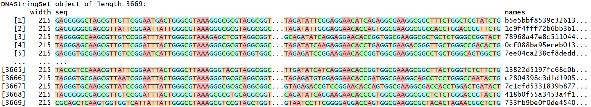
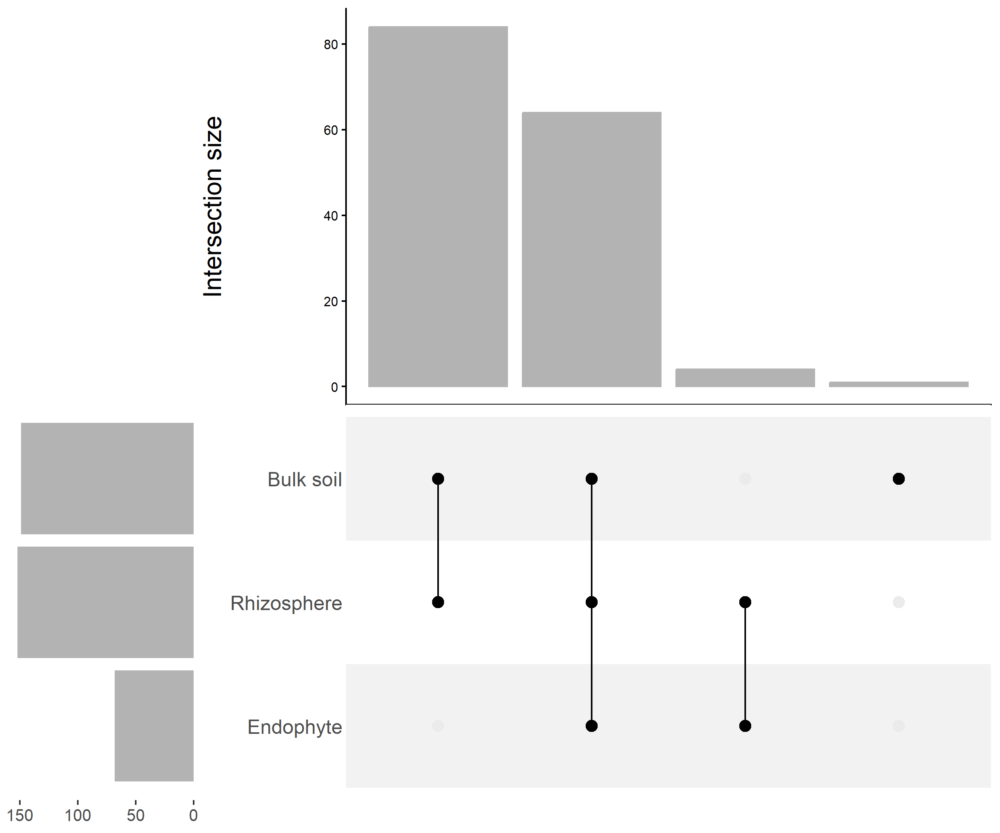
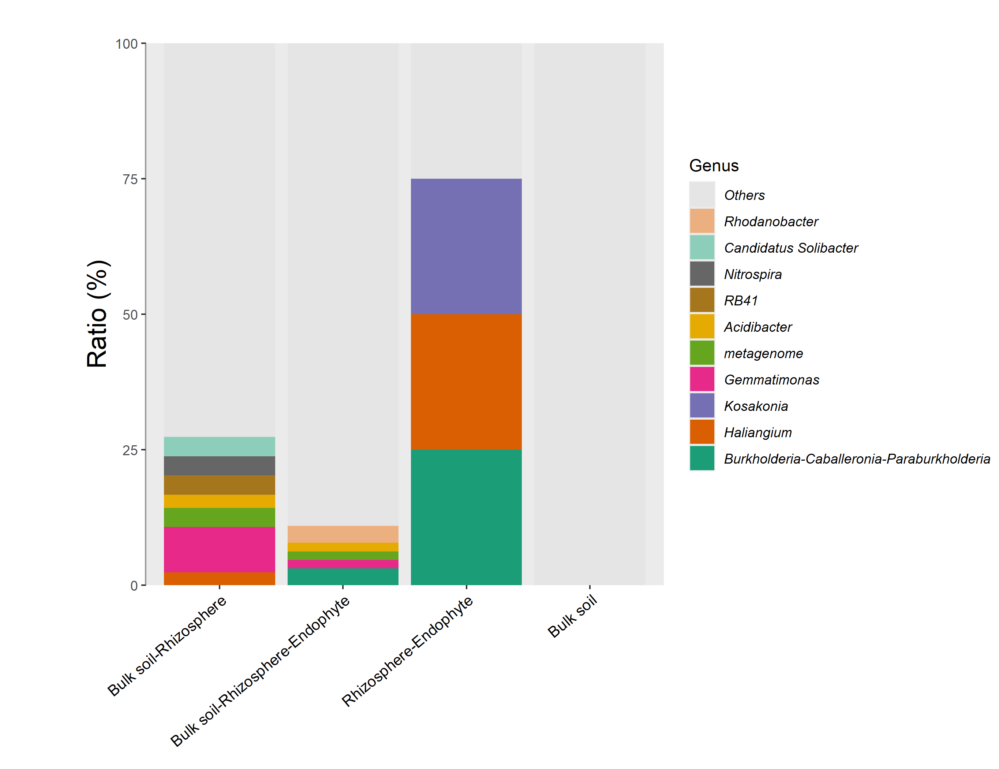
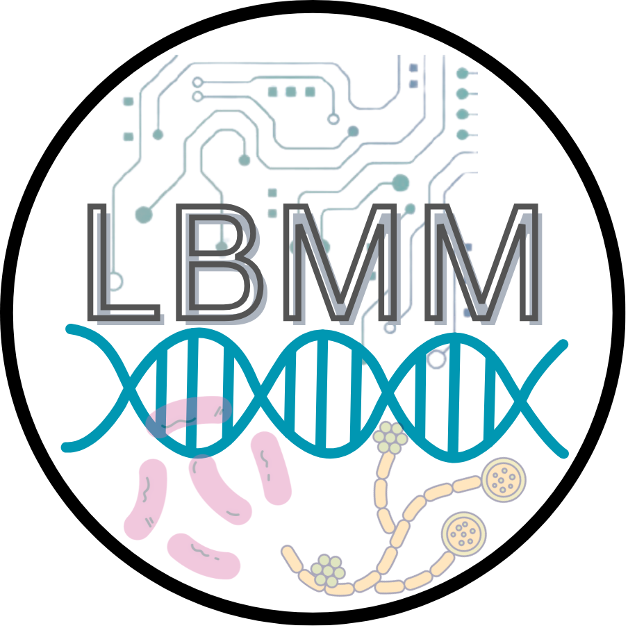

Prática 3 - Introdução à Análise de microbiomas em R
IB/UNESP Rio Claro
2 de novembro de 2026
Vamos focar em dados de amplicons

Liu et al. (2025)
2026.10.1)
Ilustração criada usando Claude (Opus 5.5), a partir de Liu, Chi, et al. 2025
Aula_pratica_microbiomas_2026
File > New Project > Existing Directory (RStudio 2026.10.1)O arquivo RCode/Step1_Install_packages.R no Github do protocolo da Nature apresenta uma lista completa de linhas de instalação.
Nesta prática, instalaremos os seguintes pacotes:

https://chiliubio.github.io/microeco_tutorial/basic-class.html#microtable-class
# Tabela de taxonomia
taxonomy_table_raw <- read.table("dados_amplicons/QIIME2_converted/taxonomy.tsv",
sep = "\t", skip = 1, comment.char = "$", header = FALSE)
head(taxonomy_table_raw)
#
taxonomy_table <- file2meco:::split_assignments(taxonomy_table_raw[, 2],
ranks = c("Kingdom", "Phylum", "Class", "Order", "Family", "Genus", "Species"), split = ";") %>% as.data.frame
head(taxonomy_table)
rownames(taxonomy_table) <- taxonomy_table_raw[, 1]
head(taxonomy_table)sequences <- Biostrings::readDNAStringSet("dados_amplicons/QIIME2_converted/dna-sequences.fasta")
# Visualizando o objeto criado
sequences
# read sample information into R
tmp_sample <- as.data.frame(read_excel("dados_amplicons/QIIME2_converted/Sample_info.xlsx",
col_names = TRUE),
stringsAsFactors = FALSE)
# row names are necessary and should be in accordance with those in feature abundance table
rownames(tmp_sample) <- tmp_sample[, 1]
head(tmp_sample)microtable_obj <- microtable$new(sample_table = tmp_sample,
otu_table = feature_table,
tax_table = taxonomy_table,
phylo_tree = tree,
rep_fasta = sequences)
# tidy all the data inside the object to ensure that samples and features correspond across different data
microtable_obj$tidy_dataset()
# tidy taxonomy information to unify the naming of taxonomy
microtable_obj %<>% tidy_taxonomymicrotable_obj$tax_table %<>% base::subset(Kingdom == "k__Archaea" | Kingdom == "k__Bacteria")
microtable_obj$filter_pollution(taxa = c("mitochondria", "chloroplast"))
unique(microtable_obj$tax_table$Kingdom)
microtable_obj$tidy_dataset()
# Verificando a variação de tamanho de amostras
microtable_obj$sample_sums() %>% range
# Atribuindo níveis aos diferentes fatores experimentais na tabela de amostras
microtable_obj$sample_table$Compartment %<>% factor(., levels = c("Bulk soil", "Rhizosphere", "Endophyte"))
microtable_obj$sample_table$Fertilization %<>% factor(., levels = c("CK", "NPK", "NPKS"))
microtable_obj$sample_table$Cropping %<>% factor(., levels = c("CC", "RC"))
microtable_obj$sample_table$Group %<>% factor(., levels = c("CC-CK", "RC-CK", "CC-NPK", "RC-NPK", "CC-NPKS", "RC-NPKS"))Rarefação, incluindo apenas amostras com mais de 2.000 leituras
Identificação dos grupos de microrganismos presentes amplamente e que são abundantes nas amostras.
library(ggplot2)
# Definindo taxons "core"
# Frequência de ocorrência: 50%
# Média relativa de abundância: 0.05%
freq <- 0.5
abund <- 0.0005
# Taxons "core" para cada compartimento
S <- clone(amplicon_16S_microtable_rarefy)
S$sample_table %<>% .[.$Compartment == "Bulk soil", ]
S$tidy_dataset()
S$filter_taxa(rel_abund = abund, freq = freq)
RS <- clone(amplicon_16S_microtable_rarefy)
RS$sample_table %<>% .[.$Compartment == "Rhizosphere", ]
RS$tidy_dataset()
RS$filter_taxa(rel_abund = abund, freq = freq)
R <- clone(amplicon_16S_microtable_rarefy)
R$sample_table %<>% .[.$Compartment == "Endophyte", ]
R$tidy_dataset()
R$filter_taxa(rel_abund = abund, freq = freq)# Combinando as ASV "core" em um único data.frame
core_res <- rbind(data.frame(compartment = "S", ASV = S$taxa_names()),
data.frame(compartment = "RS", ASV = RS$taxa_names()),
data.frame(compartment = "R", ASV = R$taxa_names()))
head(core_res)# generate a total core-taxa microtable object according to names
tmp_microtable <- clone(amplicon_16S_microtable_rarefy)
tmp_microtable$otu_table %<>% .[rownames(.) %in% c(S$taxa_names(), RS$taxa_names(), R$taxa_names()), ]
tmp_microtable$tidy_dataset()
# Combinando amostras para cada compartimento
tmp_merge <- tmp_microtable$merge_samples("Compartment")
head(tmp_merge$sample_table)
head(tmp_merge$otu_table)
# Análise da interseção usando a classe trans_venn
trans_vennobj <- trans_venn$new(tmp_merge, ratio = "numratio", name_joint = "-")
# Removendo grupos com zeros
trans_vennobj$data_summary %<>% .[.$Counts != 0, ]
# transform intersection data to microtable object for other visualization
trans_vennobj_mt <- trans_vennobj$trans_comm(use_frequency = TRUE)
# calculate 'relative abundance'
trans_vennobj_mt$cal_abund()
tmp_x <- trans_vennobj$data_summary %>% tibble::rownames_to_column(.) %>% .[order(.$Counts, decreasing = TRUE), ] %>% .$rowname
# for visualization
trans_vennobj_mt_abund <- trans_abund$new(dataset = trans_vennobj_mt, taxrank = "Genus", ntaxa = 10)
# order_x: adjust the order of groups to be same with the order in 'Coretaxa_intersection.png'
g2 <- trans_vennobj_mt_abund$plot_bar(bar_full = TRUE, legend_text_italic = TRUE, xtext_angle = 40, order_x = tmp_x)
# add title in y-axis; add more space in the figure left
g2 <- g2 + ylab("Ratio (%)") + theme(plot.margin = unit(c(1, 0, 0, 2), "cm"))
cowplot::save_plot("Coretaxa_intersection_Genusratio.png", g2, base_aspect_ratio = 1.3, dpi = 300, base_height = 7)

Prática 3 - Introdução à Análise de microbiomas em R